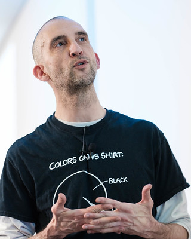

Our team offers a unique blend of software engineering and quantitative analysis skills. We have years of experience developing .NET and Azure solutions, delivering Service-Oriented Architectures for a variety of clients across industries, and we can help you design scalable, maintainable and reliable solutions for your business. We also offer training and mentoring around Data Science and Machine Learning using F#.
Interesting in learning more? Contact us at info@clear-lines.com

Mathias Brandewinder enjoys solving challenging business problems with software engineering and applied mathematics techniques, and some creativity. His current focus is on functional programming with F#, machine learning and data science, and on putting them together to help companies make smarter decisions with their data. He loves teaching and mentoring, and is a regular speaker at conferences and community events all over the world. A former Microsoft F# MVP, he holds a MS in Operations Research from Stanford, a MS in Economics from University of Paris X, and a MBA from ESSEC.
Petar Vucetin is a veteran solution architect specializing in line-of-business SOA applications. He has built distributed systems and applications for over twenty years, and was the chief architect of a Fortune 500 company in the publishing industry. He has worked in manufacturing, financial, large scale retail, and other industries from which he draws his inspiration to deliver big-picture solutions for customers, often escorting them from initial architecture and project design through delivery as a virtual architect. Throughout his career, he has mentored teams and business leaders, often transforming and recovering projects, setting them back on time and on budget. He continues to pursue his passions in practicing solutions architecture as well as having fun building micro-controllers and utilizing them in connected systems.